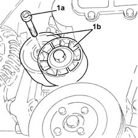
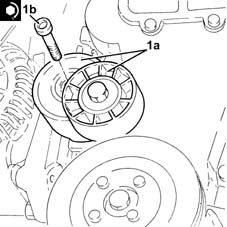

1092G15 engine component single belt mobile temperature - r rwith belt removed
- Path
- Procedures > 10 ENGINE > 1092 VARIOUS ENGINE COMPONENT CONTROLS > 1092G single drive belt for various engine components > 1092G15 engine component single belt mobile temperature - r rwith belt removed
- Kind
- repair procedure (removal / refitting; the operation number is the code)
- Applies to
- engines: 1.3 JTD; all production periods
- Interactive page
- https://sloeber94.github.io/elrnDB-lYpsln/en/#/2429088
Applies to: engines: 1.3 JTD; all production periods
 Removing
Removing
 Refitting
Refitting1. Undo the bolt (1a) and remove the single drive belt tensioner (1b).

Applies to: engines: 1.3 JTD; all production periods
Refitting
Removing1. Place the engine components single drive belt moving tensioner (1a) back in its housing and fix it tightening the bolt (1b) to the recommended torque.
 | Fastening | Component | Ø | Value (daNm) |
|---|---|---|---|---|
1b | Bolt | SINGLE SERVICES MOBILE BELT TENSIONER | M10 | (Upper engine crankcase side) 4.5 ÷ 5.5 |
